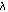

The TermType module defines the type of terms. For an explanation of the term syntax, see the "MetaPRL Terms" chapter of the MetaPRL User Guide. The TermType module implements terms as an abstract type. The visible parts of the terms are given types that end in a quote (for instance, the type of abstract terms is term and the visible terms are of type term'). Functions are provided in the Term module to both fold and unfold terms to their visible representations. Each term has a name of type operator and a list of (possibly bound) subterms:
type term' = { term_op : operator; term_terms : bound_term list }
type bound_term' = { bvars : string list; bterm : term }
Binding variables are represented a strings. The operator type itself is used to include a name for the term, and a possible list of parameters, which are just constant values that the term represents.
type operator' = { op_name : opname; op_params : param list }
The opname is the name of the term, an abstract type defined in the Opname module. Opnames provide the means of giving names to terms that differ between modules. For the next few examples, we'll represent terms are string pairs module-name:term-name. Let var_x represent the term for the variable "x." Here are some possible representations for terms:
x.x =
{ term_op = { op_name = Itt_rfun:lambda; op_params = [] };
term_terms = [{ bvars = "x"; bterm = var_x }]
}
0 = { term_op = { op_name = Itt_int:number;
op_params = [Int 0]
};
term_terms = []
}
Variables have representations like other terms. The opname for a variable is the global opname var, and a variable "x" has the following representation:
x = { term_op = { op_name = var; op_params = [Var "x"] };
term_terms = []
}
The Term module defines the basic operations on terms, including folding and unfolding terms:
val make_term : term' -> term val dest_term : term -> term'
Several of the remaining modules define more complex operations on terms. The TermOp module defines more extensive operations that are used to construct fold/unfold operations on terms with specific opnames. The TermAddr module defines addresses that are used to denote specific subterms of a term, so the that subterm may be extracted or replaced. The TermMan module defines "manifest" terms: terms that have a common meaning across the system. This module is strictly for efficiency, so that specialized term representations can be constructed from common terms. For instance, sequents are given a special representation and operations in the TermMan module.
The TermSubst module defines substitution and unification of terms. Substitution is first order: the defined operation is simultaneous substitution of terms for variables:
val subst : term -> term list -> string list -> term
The subst function replaces the variables with the terms in the argument term. For instance, the substitution
subst <<'x, 'y>> [<< 1 + 1 >>; << 'z >>] [<< 'x >>; << 'y >>]
produces the value << 1 + 1, 'z >>.
The TermMeta module defines meta-implication, used by the refiner for defining inference rules. The TermShape module provides a "hash" function on terms: it reduces a term to an opname, a list of parameter types, and the arities of its subterms. The "shape" is used as an index into tables based on term types.
The TermEval module is used to define efficient evaluation of terms with arbitrary computation rules.